長期トレンド
JKMとJEPXシステムプライスの推移グラフ
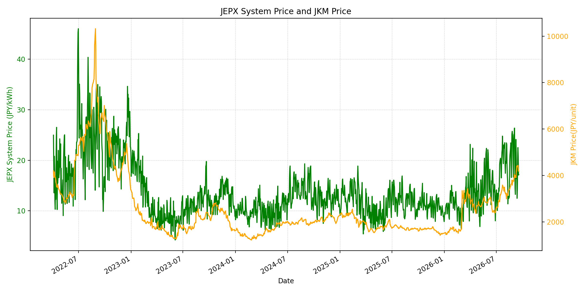
WTIの推移グラフ
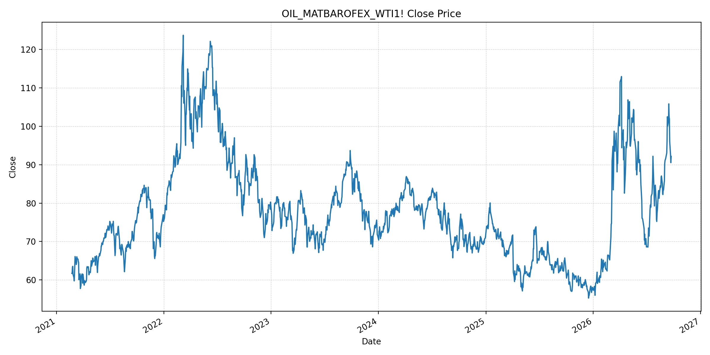
JEPXエリアプライスグラフ（直近一年分）
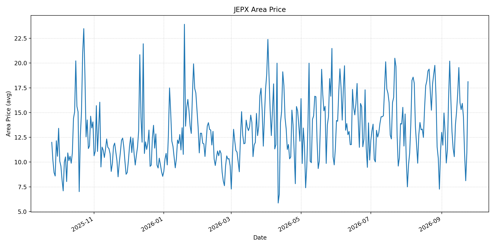
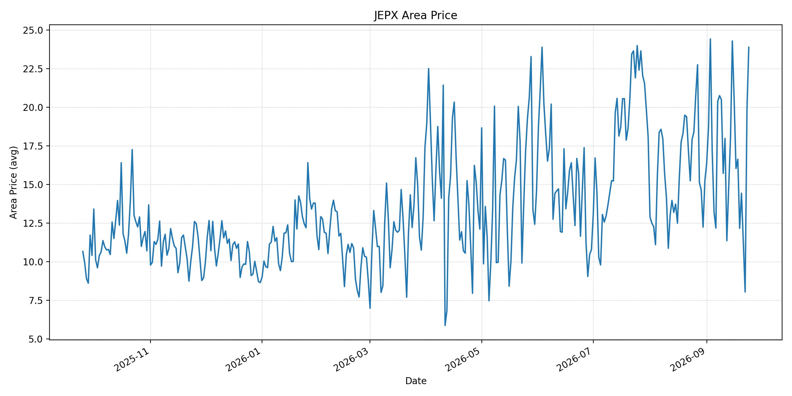
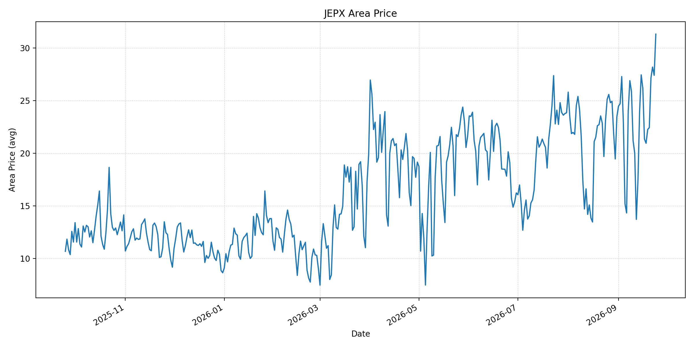
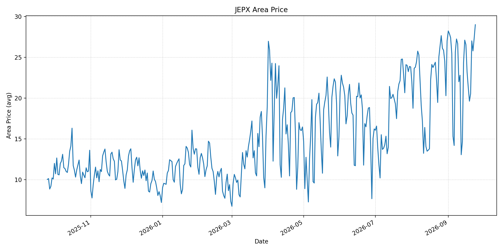
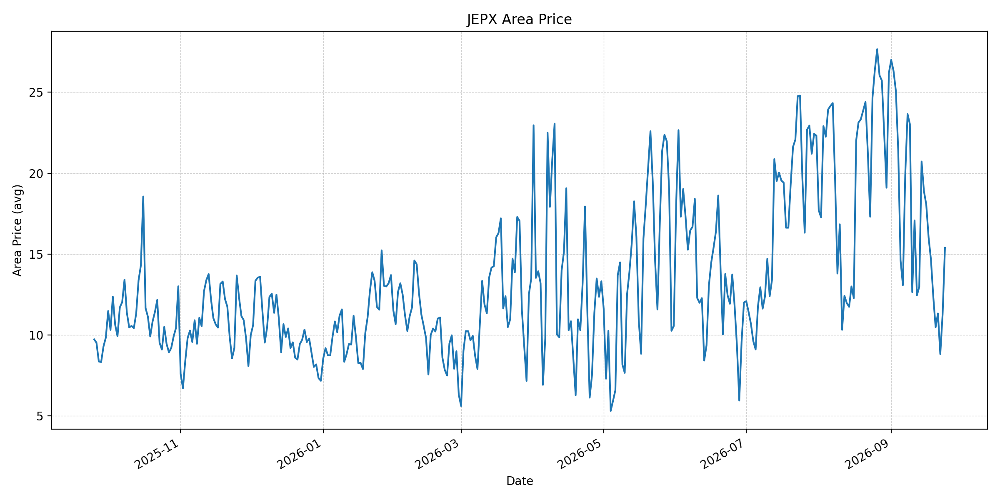
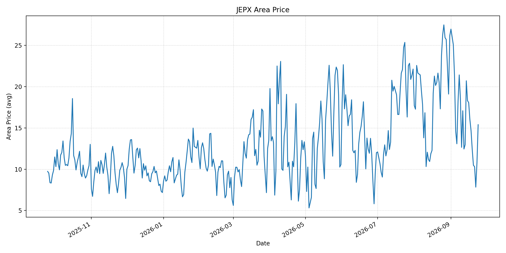
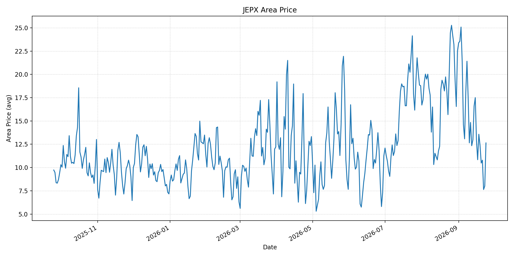
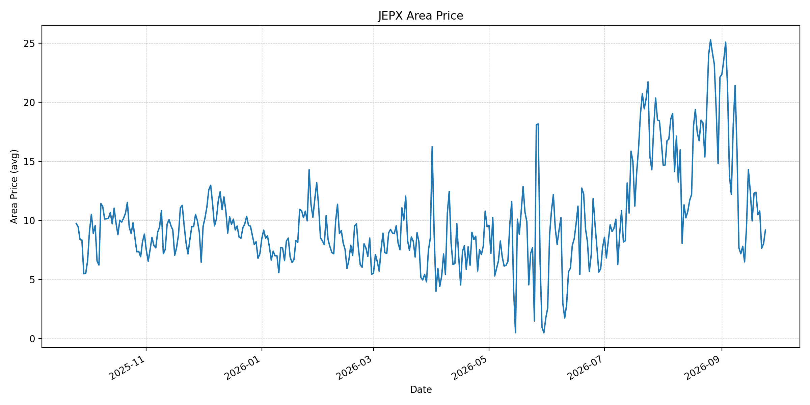
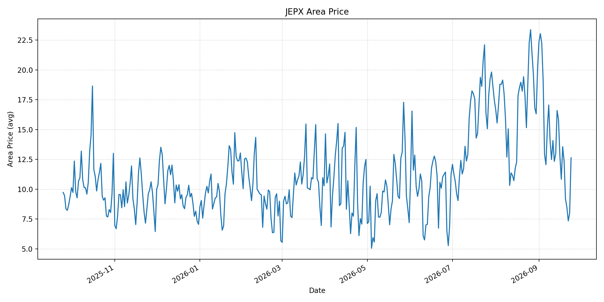
短期トレンド
JKMとJEPXシステムプライスの推移グラフ
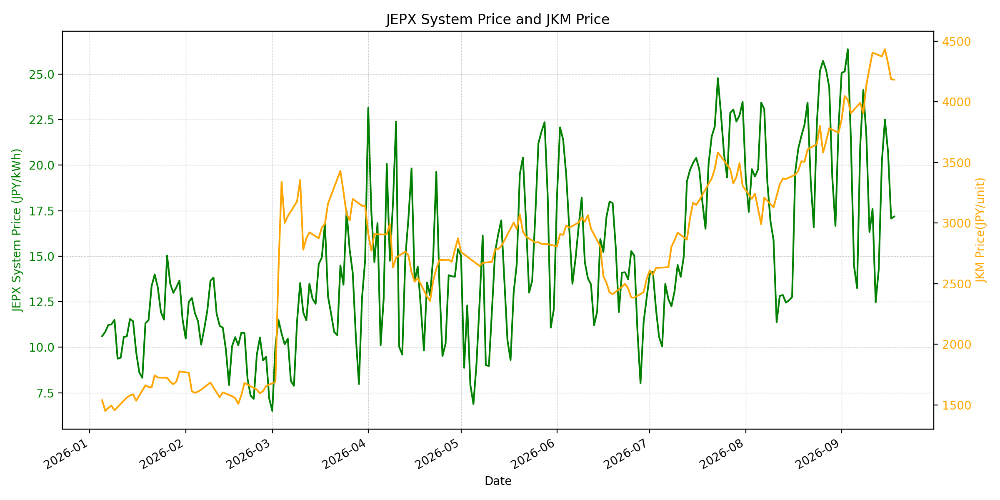
WTIの推移グラフ
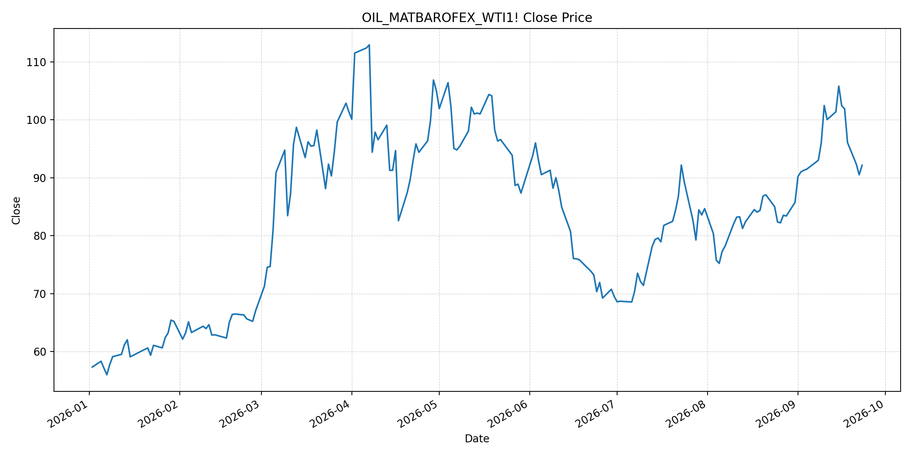
JEPXシステムプライス
最新値は 2026-09-24 分、先週終値は 2026-09-17、先月終値は 2026-08-31 時点の直近値です。
| エリア | 当日価格 | 前日価格 | 前日比（％） | 先週終値 | 先週比（％） | 先月終値 | 先月比（％） | 過去最高値 | 最高値比（％） |
|---|---|---|---|---|---|---|---|---|---|
| システム | 22.09 | 17.98 | 22.86 | 17.07 | 29.41 | 22.10 | -0.05 | 64.06 | -65.52 |
| 北海道 | 18.12 | 10.99 | 64.88 | 16.00 | 13.25 | 11.18 | 62.08 | 73.92 | -75.49 |
| 東北 | 23.89 | 19.85 | 20.35 | 16.04 | 48.94 | 15.25 | 56.66 | 84.92 | -71.87 |
| 東京 | 31.32 | 27.41 | 14.26 | 21.36 | 46.63 | 23.47 | 33.45 | 86.13 | -63.64 |
| 中部 | 29.00 | 27.30 | 6.23 | 23.18 | 25.11 | 27.01 | 7.37 | 52.06 | -44.30 |
| 北陸 | 15.39 | 11.29 | 36.32 | 16.03 | -3.99 | 26.18 | -41.21 | 46.48 | -66.89 |
| 関西 | 15.39 | 10.80 | 42.50 | 16.03 | -3.99 | 26.17 | -41.19 | 46.48 | -66.89 |
| 中国 | 12.64 | 8.01 | 57.80 | 10.84 | 16.61 | 22.51 | -43.85 | 46.48 | -72.81 |
| 四国 | 9.18 | 8.01 | 14.61 | 9.95 | -7.74 | 22.12 | -58.50 | 46.48 | -80.25 |
| 九州 | 12.64 | 8.01 | 57.80 | 10.84 | 16.61 | 20.06 | -36.99 | 40.54 | -68.82 |
LNG先物価格
最新値は 2026-09-18 の LNG(close) です。先週終値は 2026-09-11、先月終値は 2026-08-31 時点の直近値です。
| 当日価格 | 前日価格 | 前日比（％） | 先週終値 | 先週比（％） | 先月終値 | 先月比（％） | 過去最高値 | 最高値比（％） |
|---|---|---|---|---|---|---|---|---|
| 4182.00 | 4185.00 | -0.07 | 4405.00 | -5.06 | 3744.00 | 11.70 | 10319.00 | -59.47 |
石油先物価格
最新値は 2026-09-23 の OIL(close) です。先週終値は 2026-09-16、先月終値は 2026-08-31 時点の直近値です。
| 当日価格 | 前日価格 | 前日比（％） | 先週終値 | 先週比（％） | 先月終値 | 先月比（％） | 過去最高値 | 最高値比（％） |
|---|---|---|---|---|---|---|---|---|
| 92.16 | 90.52 | 1.81 | 102.43 | -10.03 | 85.76 | 7.46 | 123.70 | -25.50 |
ニュース
イラン情勢に関するニュース
- 米・イランは戦争終結の条件を巡り依然大きく隔たっており、国連総会での外交接触後も協議継続が必要とされています。参照: Reuters, 2026-09-23
- イラン高官は、米国が軍事圧力と港湾封鎖を緩和すれば7日以内にホルムズ海峡を再開できると表明しました。参照: Reuters, 2026-09-22
ホルムズ海峡経由の石油・LNGに関するニュース
- 海峡再開の条件付き提案はあるものの、実際の通航平常化には米・イラン間の条件調整が必要です。
- 過去24時間で、ホルムズ経由LNG出荷を平常化する新規の確定合意は確認できませんでした。
ホルムズ海峡経由でない石油・LNGに関するニュース
- サウジアラビアは重要パイプラインの運転を再開し、迂回供給の改善期待から原油価格は下落しました。参照: Reuters, 2026-09-23
- 紅海・バブ・エル・マンデブ海峡ではフーシ派の影響力が残り、代替航路の安全性はなお不確実です。参照: Axios, 2026-09-21
日本国内のイラン戦争に関係するニュース
- 過去24時間で、イラン戦争を理由にJEPXの制度または国内の電力需給運用を直接変更する主要な新規公表は確認できませんでした。
- 燃料相場と輸送条件の変化が続くため、国内卸電力の需給と燃料市場を分けて監視します。
インサイト
ニュース事項による日本の電力市場への影響（短期：数日〜1週間）
- JEPXシステムは 22.09 円/kWhで前日比 22.86% 上昇しました。東京は 31.32 円/kWh、中部は 29.00 円/kWhです。
- LNGは 4182.00 で先週比 -5.06%、WTIは 92.16 ドルで -10.03% です。パイプライン再開と協議期待は下押し要因ですが、海峡再開は条件付きで不確実です。
- 短期では、ホルムズ再開条件、実通航数、パイプライン稼働、紅海の船舶安全を日次で確認します。
ニュース事項による日本の電力市場への影響（長期：1ヶ月〜半年）
- システム価格は先月比 -0.05%、LNGは 11.70%、WTIは 7.46% 上昇しています。燃料高が再燃すれば火力の限界費用に波及する可能性があります。
- 北海道は先月比 62.08%、東北は 56.66% 上昇する一方、四国は -58.50% です。燃料とエリア別需給を分けて評価します。
- 外交進展と迂回輸送の回復が進むかを見極めつつ、調達先分散、LNG在庫、長期契約の柔軟性を継続評価します。